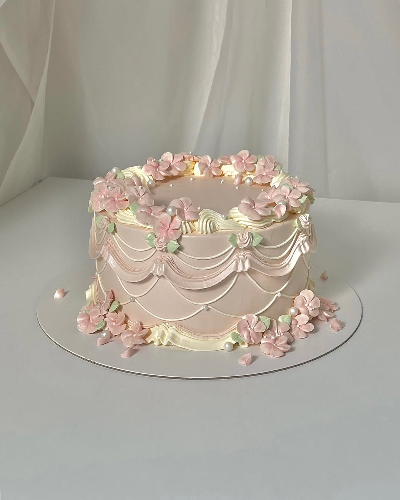

Über mich

Hallo! Ich bin Melly, die Gründerin von Mellys Dessertatelier. Backen ist meine große Leidenschaft – besonders Desserts wie Cookies, Brownies und Cheesecake.
Ich liebe es, neue Rezepte auszuprobieren und einfache Schritte mit schönen Ergebnissen zu kombinieren. Auf dieser Website teile ich meine liebsten Süßspeisen, damit jeder sie ganz einfach nachmachen kann.
Viel Spaß beim Backen! 💕🧁